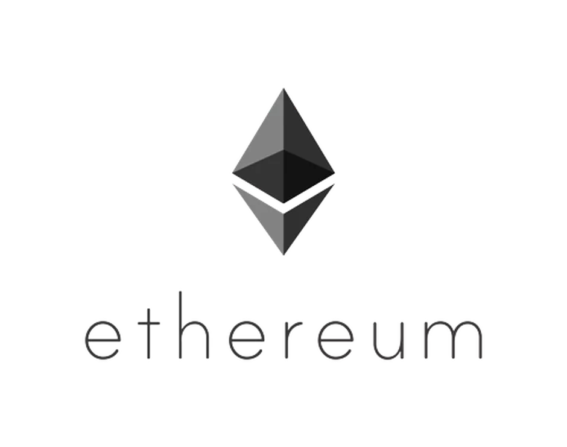

Ethereum

Even when comparing the cryptocurrency aspect, the two projects appear to be vastly different. For instance, Bitcoin has a hard cap of 21 mln Bitcoins that can ever be created, while a potential supply of Ether can be practically endless. Moreover, Bitcoin’s average block mining time is 10 minutes, whereas Ethereum’s aims to be no more than 12 seconds, which means quicker confirmations.
Another major difference is that these days successful Bitcoin mining requires tremendous amounts of computing power and electricity and is only possible if using industrial-scale mining farms. On the other hand, Ethereum’s proof-of-work algorithm encourages decentralized mining by individuals.
Perhaps the most important difference between the two projects is that Ethereum’s internal code is Turing complete, which means that literally everything can be calculated as long as there is enough computing power and time to do so. Bitcoin doesn’t have this capability. While a Touring complete code provides Ethereum users with practically limitless possibilities, its complexity also means potential security complications.
How Ethereum works
As it was mentioned before, Ethereum is based on Bitcoin’s protocol and its Blockchain design but is tweaked so that applications beyond money systems can be supported. The two Blockchains’ only similarity is that they store entire transaction histories of their respective networks, but Ethereum’s Blockchain does a lot more than that. Besides the history of transactions, every node on Ethereum network also needs to download the most recent state, or the current information, of each smart contract within the network, every user’s balance and all the smart contract code and where it’s stored.
Essentially, the Ethereum Blockchain can be described as a transaction-based state machine. When it comes to computer science, a state machine is defined as something capable of reading a series of inputs and transitioning to a new state based on those inputs. When transactions are executed, the machine transitions into another state.
Every state of Ethereum consists of millions of transactions. Those transactions are grouped to form ‘blocks,’ with each and every block being chained together with its previous blocks. But before the transaction can be added to the ledger, it needs to be validated, that goes through a process called mining.
Mining is a process when a group of nodes apply their computing power to completing a ‘proof of work’ challenge, which is essentially a mathematical puzzle. The more powerful their computer is, the quicker it can solve the puzzle. An answer to this puzzle is in itself a proof of work, and it guarantees the validity of a block.
A lot of miners around the world are competing with each other in an attempt to create and validate a block, as every time a miner proves a block new Ether tokens are generated and awarded to said miner. Miners are a backbone of the Ethereum network, as they not only confirm and validate transactions and any other operations within the network but also generate new tokens of the network’s currency.
How to get Ether
There are two primary ways of obtaining Ether: buying it and mining it.
The most common and perhaps the most convenient way of buying Ether is buying it on exchanges. All you need to do is find an exchange that trades in Ether and operates within your jurisdiction, set up an account and use either your bank account, wire transfer or in some cases even your bank card to buy Ether tokens. Those will then need to be stored in a wallet, which can be provided by an exchange itself, Ethereum’s native Mist browser or by various other specialized services.
Alternatively, you can obtain Ether through peer-to-peer trading, paying for it with any agreed upon currency, including Bitcoin and other cryptocurrencies. This can be done both online and in-person. Peer-to-peer trading is rather popular among Bitcoin users. However, due to the virtually unlimited supply of Ether tokens and the Ethereum platform not putting complete user anonymity at the forefront of the system, Ether is usually obtained via exchanges.
Another way of getting Ether tokens is by mining them. Mining Ethereum uses proof-of-work, which means that miners contribute their computing power to solve a complex mathematical problem in order to ‘seal-off’ and confirm a block of actions within the network. Miners who manage to successfully complete this task receive a reward for every block mined.
What can Ethereum be used for?
First and foremost, Ethereum allows developers to build and deploy decentralized applications. Moreover, any centralized services can be decentralized using the Ethereum platform. The potential of Ethereum platform for building apps not limited by anything other than the creators’ creativity.
Decentralized applications have a potential of changing the relationship between companies and their audiences completely. These days there are a lot of services that charge commission fees for simply providing an escrow service and a platform for users to trade goods and services. On the other hand, Ethereum’s Blockchain’s can enable customers to trace the origins of product they’re buying, while the implementation of smart contracts can ensure safe and fast trading for both parties without any intermediary.
The Blockchain technology itself has a potential of revolutionizing web-based services as well as industries with long-established contractual practices. For example, an insurance industry in the US possesses more than $7 bln inclined life insurance money, which can be redistributed fairly and transparently using Blockchain. Moreover, with the implementation of smart contracts, clients can be able to simply submit their insurance claim online and receive an instant automatic payout, considering that their claim met all the required criteria.
Essentially, the Ethereum Blockchain is capable of bringing its core principles - trust, transparency, security and efficiency - into any service, business or an industry.
What apps were developed on Ethereum?
Ethereum has a potential of opening up the world of decentralized apps even for people without any technical background. If this happens, it can become a revolutionary leap for Blockchain technology that will bring it closer to mass-adoption. Currently, the network can be easily accessed through its native Mist browser, which provides a user-friendly interface as well as a digital wallet for storing and trading Ether. Most importantly, users can write, manage and deploy smart contracts. Alternatively, Ethereum network can be accessed through a MetaMask extension for Google Chrome and Firefox.
Future of Ethereum
Despite the fact that Ethereum, much like Bitcoin, has been around for several years, it only just started gaining mainstream media’s and general public’s attention. A lot of experts agree that it is a disruptive technology that is set to not only completely change the way Internet works but also revolutionize services and industries that have been existing for hundreds of years.
Click here for Part 2 .